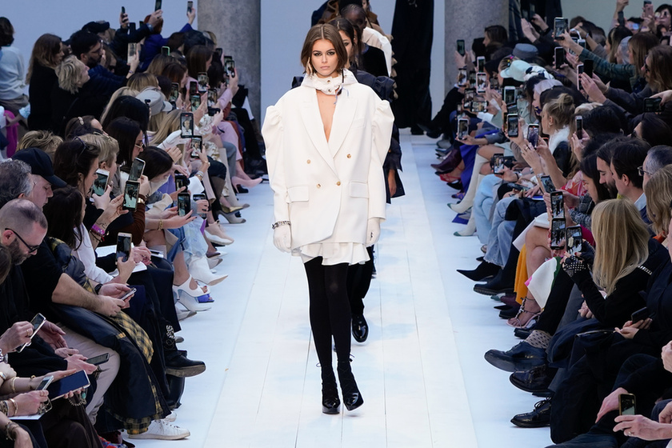

Milánói Dóm

A Milánói Dóm (Duomo di Milano) Olaszország egyik leglenyűgözőbb és legnagyobb gótikus katedrálisa, amely a város központjában, a híres Dóm téren áll. Építése több mint ötszáz évig tartott, ezért a gótikus stílus mellett reneszánsz és neoklasszicista elemeket is magán visel. Hatalmas márványhomlokzata, több mint háromezer szobra és csipkeszerű tornyai különleges, mesebeli látványt nyújtanak. A dóm tetejére feljutva Milánó városára nyílik páratlan panoráma, központjában pedig a híres aranyszobor, a Madonnina áll. A Milánói Dóm a város jelképe és Olaszország egyik leglátogatottabb műemléke.
Milánói divathét

A milánói divat világszerte az elegancia, a kifinomult szabásvonalak és a luxusanyagok szinonimája. A város évtizedek óta az egyik legfontosabb divatközpont, ahol az olasz mesterségbeli tudás találkozik a modern, sokszor kísérletező dizájnnal. Olyan ikonikus márkák székhelye, mint a Prada, a Gucci, a Versace, az Armani vagy a Dolce & Gabbana – ezek mind hozzájárulnak Milánó különleges divatkultúrájához.
A Milánói Divathét (Milano Fashion Week) évente kétszer kerül megrendezésre, február–márciusban az őszi/téli, szeptemberben pedig a tavaszi/nyári kollekciók bemutatására. A világ egyik legfontosabb divateseménye, ahol tervezők, modellek, újságírók és influenszerek találkoznak. A bemutatókat gyakran látványos helyszíneken tartják, a város pedig ilyenkor pezseg: pop-up események, kiállítások és afterparty-k színezik a programot. A milánói divathét híres arról, hogy hangsúlyt fektet a klasszikus olasz stílusra, de teret ad a fiatal, feltörekvő tervezőknek is.
AC Milán

Az AC Milan Olaszország egyik legismertebb és legsikeresebb futballklubja, amelyet 1899-ben alapítottak. A csapat világszerte híres elegáns játékáról, ikonikus fekete-piros mezéről és arról, hogy hosszú története során számos bajnoki címet és nemzetközi trófeát nyert, köztük több Bajnokok Ligája-győzelmet is. A klub a milánói identitás fontos része, és hatalmas, szenvedélyes szurkolótáborral rendelkezik.
A Milan otthona a San Siro Stadion, amely Olaszország egyik legnagyobb és legismertebb arénája. A 80 ezres csodastadiont a város két nagy csapata, az AC Milan és az Inter közösen használják. A San Siro nem csupán egy pálya, hanem futballtörténeti szentély, ahol legendák születtek, és ahol a szurkolók hihetetlen hangulatot teremtenek.
A foci Olaszországban jóval több, mint sport és kulturális örökség, közösségi élmény és érzelem. Az olaszok számára a futball a családi vasárnapok része, a barátságok kötőeleme, a városok büszkesége. Egy-egy gól vagy győzelem egész országot képes megmozgatni, és a stadionokban megjelenő szenvedély a világ legismertebb futballhangulatai közé tartozik.